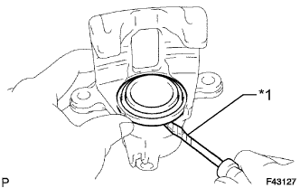
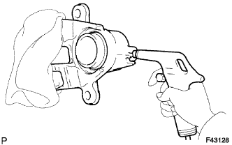
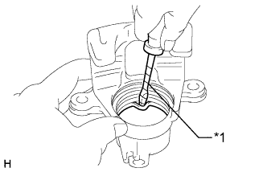

REAR BRAKE > DISASSEMBLY |
| 1. REMOVE CYLINDER BOOT |
|  |
Using a screwdriver, remove the cylinder boot from the rear disc brake cylinder assembly.
| *1 | Protective Tape |
| 2. REMOVE REAR DISC BRAKE PISTON |
|  |
Place a piece of cloth or a similar object between the rear disc brake piston and rear disc brake cylinder.
Use compressed air to remove the rear disc brake piston from the rear disc brake cylinder.
| 3. REMOVE PISTON SEAL |
|  |
Using a screwdriver, remove the piston seal from the rear disc brake cylinder.
| *1 | Protective Tape |
| 4. REMOVE REAR DISC BRAKE BLEEDER PLUG CAP |
| 5. REMOVE REAR DISC BRAKE BLEEDER PLUG |
Remove the bleeder plug cap and bleeder plug from the rear disc brake cylinder assembly.